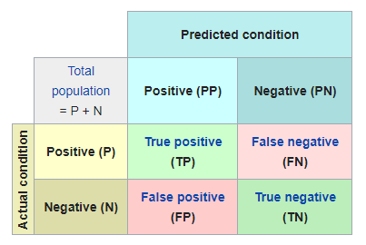

Metrics
Contents
Metrics¶
Classification
Confusion Matrix
Accuracy / Precision / Recall
F1 Score
ROC / AUC
Common Loss Functions:
Log loss / cross entropy
Regression
MSE
r-squared; adjusted-r-squared
Log Likelihood
AIC
BIC
Also see: https://scikit-learn.org/stable/modules/model_evaluation.html#scoring-parameter
Classification¶
Confusion Matrix¶

from markdown import markdown
import numpy as np
np.random.seed(0)
from sklearn.metrics import confusion_matrix
acc = 0.9
y_true = np.random.binomial(1,0.7,100)
y_pred = [x if np.random.binomial(1,acc,1) == 1 else abs(x-1) for x in y_true]
confusion_matrix(y_true, y_pred)
array([[22, 1],
[ 8, 69]])
In the example above, there are:
30 predicted zeros and 23 actual zeros
70 predicted ones and 77 actual ones
22 zeros where predicted values are zeros
1 zeros where predicted values are ones
69 ones where predicted values are ones
8 ones where predicted values are zeros
Metrics using confusion matrix:
Accuracy: the true positives and negatives out of the total population
Precision: the true positives out of total predicted positives
Recall / Sensitivity / True Positive Rate: the true positives out of the total actual positives
Specificity /True Negative Rate: the true negatives out of the total actual negatives
True Positive Rate: True positives / Actual Positives
False Positive Rate: False positives / Actual Positives
True Negative Rate: True negatives / Actual negatives
False Negative Rate: False negative / Actual positives
F1 Score
the F1 score is a harmonic mean of Precision and Recall: \(2*\frac{precision+recall}{precision + recall}\)
harmonic mean is often preferable to arthimetic mean when dealing with rates (e.g. suppose you’re on a out-and-back cycling trail with a tail wind on the way out allowing you to ride at 20mph and headwind slowing you down to 14mph on the way back, what’s the average mph of the entire ride?)
ROC (Receiver Operating Characteristic)¶
A ROC is a plot of the TPR against the FPR. It shows the relationship between sensitivity and specificity and accuracy of the model.
You need the true labels + either predicted values or predicted probabilities to generate a ROC curve. When using predicted probabilities, you can use different threshold to classify label = 1. By generating predictions for different thresholds, you get different tpr and fpr for each threshold. Plot these tpr against the fpr to generate a ROC curve.
Slightly confusing, but note that in the example below, 0 = True.
When the threshold is extremely high, e.g. 1, then all predictions are 0 so both TPR and FPR = 1. We get all the 0s right, but we’re also predicting 0 for all the 1s, so there are many false 0s.
When the threshold is ~ 0.5, the tpr is high (~0.97) and the fpr is low (~0.13).
from sklearn.metrics import roc_curve, RocCurveDisplay
y_true = np.random.binomial(1,0.7,100)
probs = [
np.random.beta(3,1,1)[0]
if x == 1
else np.random.beta(1,5,1)[0]
for x in y_true
]
RocCurveDisplay.from_predictions(y_true, probs)
<sklearn.metrics._plot.roc_curve.RocCurveDisplay at 0x7fb31ff1fa90>

for threshold in np.linspace(0,1,20):
preds = [1 if x > threshold else 0 for x in probs ]
[[tp, fn],[fp, tn]] = confusion_matrix(y_true, preds)
print(f"thresh: {round(threshold,1)}, tpr: {round(tp / (tp + fn),2)} fpr: {round(fp / (fp + tn),2)}")
thresh: 0.0, tpr: 0.0 fpr: 0.0
thresh: 0.1, tpr: 0.13 fpr: 0.0
thresh: 0.1, tpr: 0.26 fpr: 0.0
thresh: 0.2, tpr: 0.52 fpr: 0.01
thresh: 0.2, tpr: 0.68 fpr: 0.01
thresh: 0.3, tpr: 0.74 fpr: 0.01
thresh: 0.3, tpr: 0.84 fpr: 0.01
thresh: 0.4, tpr: 0.94 fpr: 0.07
thresh: 0.4, tpr: 0.97 fpr: 0.12
thresh: 0.5, tpr: 0.97 fpr: 0.13
thresh: 0.5, tpr: 1.0 fpr: 0.16
thresh: 0.6, tpr: 1.0 fpr: 0.23
thresh: 0.6, tpr: 1.0 fpr: 0.29
thresh: 0.7, tpr: 1.0 fpr: 0.36
thresh: 0.7, tpr: 1.0 fpr: 0.39
thresh: 0.8, tpr: 1.0 fpr: 0.46
thresh: 0.8, tpr: 1.0 fpr: 0.59
thresh: 0.9, tpr: 1.0 fpr: 0.71
thresh: 0.9, tpr: 1.0 fpr: 0.81
thresh: 1.0, tpr: 1.0 fpr: 1.0
AUC¶
AUC summarizes the performance of the classification model across all the possible thresholds. It can be calculated as the integral (hence, area under the curve) of the ROC curve. High values close to 1 means that the model performs well under any threshold.
Log Loss / Cross Entropy¶
The likelihood function for a sequence of Bernoulli trials is:
Taking the log gives us the log likelihood:
To get a loss function, we often multiply by \(-\frac{1}{N}\). Reversing the sign let’s us minimize and divide by N to normalize.
Note intuitively how this differs from accuracy: when a classification is correct, we add \(p\) to the likelihood (or equivalently, subtract \(p\) from the loss). So the model is rewarded for probabalistic certainty.
Regression¶
MSE¶
We often use RMSE (root mean squared error), which is simply the square root of the MSE. RMSE may be preferable for interpretability as it will be in the same units as the dependent variable.
y = np.random.normal(10,2,100)
y_pred = y + np.random.normal(0,1,100)
mse = np.mean(np.sqrt((y - y_pred)**2))
MSE / MAD¶
The Mean/Median Absolute Deviation is another metric that can be used to assess model fit:
MSE vs MAD: One key difference is that squaring the errors means larger errors are penalized more. If using the median absolute deviation, another difference could arise if conditional mean of your dependent variable is skewed. The median would provide a biased estimate.
r-squared¶
R^2 is a goodness of fit measure that tells you the amount of variation in the output that can be explained by the covariates. It is computed as \(R^2 = 1 - \frac{RSS}{TSS}\) where RSS is the residual sum of squares and TSS is the total sum of squares, \(TSS = \sum{(y_i-\bar{y})^2}\)
The adjusted r-squared is defined as:
where \(df_{res}\) is \(n-p\) and \(df_{tot}\) is \(n-1\). Importantly, the adjustment penalizes complex models (i.e. as the # of parameters increases)
Likelihood¶
The likelihood function describes the probability of some parameter values, given some data are observed: \(L(\theta|x)\).
One method of estimating a model is to maximize the likelihood function (maximum likelihood estimation).
The log likelihood function is often used out of convenience.
AIC / BIC¶
Like MSE and R^2, AIC and BIC are also used to compare different models. In both cases, we want to select the model with lowest AIC/BIC. Both metrics penalize models for complexity. BIC penalizes the model MORE for its complexity compared to AIC.
where K is equal to the number of parameters. (For multiple regression, include intercept and constant variance parameters). L is the model likelihood.
where k is the # of parameters and N is the number of observations